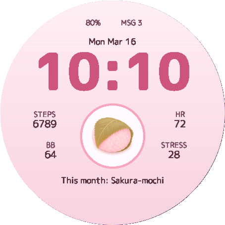

和菓子パステル｜月ごとの和菓子とパステルの色に替わるGarmin向けデジタル文字盤
和菓子パステルは、月ごとの和菓子を描いた、Garmin 向けのデジタルウォッチフェイスです。真ん中に今月の和菓子の絵を小さなお皿のように置き、背景と数字は、その和菓子に合わせたやさしいパステルの色になります。
要点: 12か月それぞれの和菓子の絵と色に、月が替わると切り替わります。設定で好きな月に固定することもできます。有料のウォッチフェイスで、インストールから24時間はすべての機能を無料で試せます。
どんな人に向いていますか？
- 対応する Garmin の時計で、季節を感じるやわらかい色の文字盤を使いたい方
- 和菓子や、日本の季節のものが好きな方
- 好きな和菓子の月に、色と絵を固定して使いたい方
- 歩数や心拍などのデータも、文字盤に表示しておきたい方
12か月の和菓子
| 月 | 和菓子 |
|---|---|
| 1月 | 花びら餅 |
| 2月 | 椿餅 |
| 3月 | 桜餅 |
| 4月 | 草餅 |
| 5月 | 柏餅 |
| 6月 | 水無月 |
| 7月 | 若鮎 |
| 8月 | 金魚の錦玉羹 |
| 9月 | 月見団子 |
| 10月 | 栗きんとん |
| 11月 | 紅葉の練り切り |
| 12月 | 雪うさぎ |
- 和菓子の絵の下に、名前を表示します(例:「今月の和菓子: 桜餅」)。名前は設定で消せます。
- 天気の表示とアニメーションはありません。




※ 画像はシミュレーター(Venu 3)の画面で、時計の言語が英語のときの表示です。データ枠の値は表示の例です。
※ アイコンと文字盤の絵は、AI(Canva の AI)で作った絵をもとにしています。
文字盤に表示するもの
| 表示 | 内容 |
|---|---|
| 時刻 | 大きなデジタルの時刻(12時間制・24時間制は時計の設定に従います) |
| 日付 | 日付と曜日 |
| 上の小さな表示 | 時計の電池の残量(%)と通知の件数 |
| データ枠 4つ(和菓子の左右に2つずつ) | 歩数、心拍、体のエネルギー残量の指標(BB)、ストレス、消費カロリー、移動距離(km か mi。時計の単位の設定に従います)、上った階数、運動の時間(週)、秒、なし から選べます。大きな歩数・消費カロリーは「12.3K」のように短く表示し、値が取れないときは「--」と表示します |
設定
- 季節の色: 固定しない(月に合わせる)か、1月〜12月のどれかに固定
- 和菓子の名前を表示する(する / しない)
- データ枠1〜4(左の上・右の上・左の下・右の下)。初期値は 歩数・心拍・BB・ストレス
常時表示
- 低電力の状態(常時表示)では、時刻と上の段のデータ枠2つだけを、黒の背景に灰色で表示します。空・和菓子・名前は表示しません。
- AMOLED の焼き付きの危険を減らすため、表示の位置を毎分数ピクセルずらします。秒の枠は、常時表示の間は「--」になります。
対応機種
丸形のAMOLED画面のGarmin 49機種に対応しています：Forerunner 70／165・165 Music／170・170 Music／265・265S／570（42・47mm）／965／970、Venu 2・2 Plus・2S／Venu 3・3S／Venu 4（41・45mm）、vívoactive 5・6、fēnix 8 AMOLED（43・47・51mm）／fēnix 8 Pro（47・51mm）／fēnix E／fēnix 9（43・47mm）／fēnix 9 Pro（43・47・51mm）、epix (Gen 2)／epix Pro (Gen 2)（42・47・51mm）、Instinct 3 AMOLED（45・50mm）、MARQ (Gen 2)、Approach S50／S70（42・47mm）／S72（43・47mm）、Descent G2／Mk3（43・51mm）、D2 Air X10／Mach 1／Mach 2／Mach 2 Pro（tactix 8・quatix 8 など同じプラットフォームの機種を含む）
ほかの機種や、ほかの製品の対応状況はGarmin対応機種早見表で確認できます。
言語
- 文字盤の表示は日本語・英語です。時計の言語が日本語のときは、日付・和菓子の名前・ラベルが日本語になります(それ以外の言語では英語。例: 「This month: Sakura-mochi」)。
- 時計に出る購入の案内は9言語です(時計の言語に合わせて表示。対応していない言語では英語)。
価格と購入方法
有料(買い切り)のウォッチフェイスです。インストールから24時間は、すべての機能を無料でお試しいただけます。月額などの継続課金はありません。価格は Connect IQ ストアのページでご確認ください。
買い方は3つの手順です。
- 試用が終わると、文字盤に QR コードと6桁のコードが表示されます。
- スマートフォンで QR コードを読み取り(または www.kzl.io/code を開いてコードを入力し)、KiezelPay で1回だけお支払いください(カード / PayPal 対応)。
- 自動でロックが解除されます(数分かかることがあります)。同じ Garmin アカウントで使う別の対応機種では、追加の購入は不要です。
支払いは Garmin ではなく、第三者のサービス KiezelPay が扱います。
時計に出る画面と、支払ったのに解除されないときの対処は、Garminの有料ウォッチフェイスの買い方にまとめています。
よくある質問
Q. 和菓子パステルは無料で使えますか？
A. 有料(買い切り)のウォッチフェイスです。インストールから24時間は、すべての機能を無料でお試しいただけます。試用のあとは、1回の購入ですべての機能が使えるようになります。月額などの継続課金はありません。
Q. 好きな和菓子の月のまま使えますか？
A. 使えます。設定の「季節の色」で1月〜12月のどれかに固定すると、色と和菓子がその月のままになります。
Q. 和菓子の名前を消せますか？
A. 設定で、名前を表示しないようにできます。
Q. 天気は表示されますか？絵は動きますか？
A. 天気の表示とアニメーションはありません。
Q. 支払いはどこで行いますか？
A. Garmin の決済ではなく、第三者のサービス KiezelPay が扱います。試用が終わると文字盤に QR コードと購入用のコードが表示されるので、スマートフォンで QR コードを読み取るか、スマートフォンかパソコンで www.kzl.io/code を開いてコードを入力し、お支払いください。
Q. 別の Garmin の時計でも、もう一度買う必要がありますか？
A. 同じ Garmin アカウントで使う別の対応機種では、追加の購入は不要です。
お問い合わせ・不具合の報告
この製品についてのご質問・不具合のご報告・改善のご提案は、お問い合わせフォームからお送りください。下のボタンからは、製品名を入れた状態でフォームが開きます。不具合のときに書いていただきたいことは、お問い合わせのページにまとめています。
お問い合わせフォームを開くGarmin、Connect IQ、fēnix、Forerunner、Venu などは、Garmin Ltd. またはその子会社の商標です。このページで紹介している製品は SIGN(佐藤雄一)が制作したもので、Garmin が作った製品ではありません。